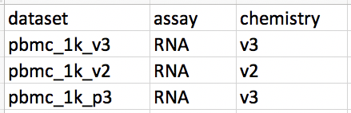
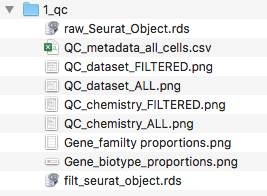
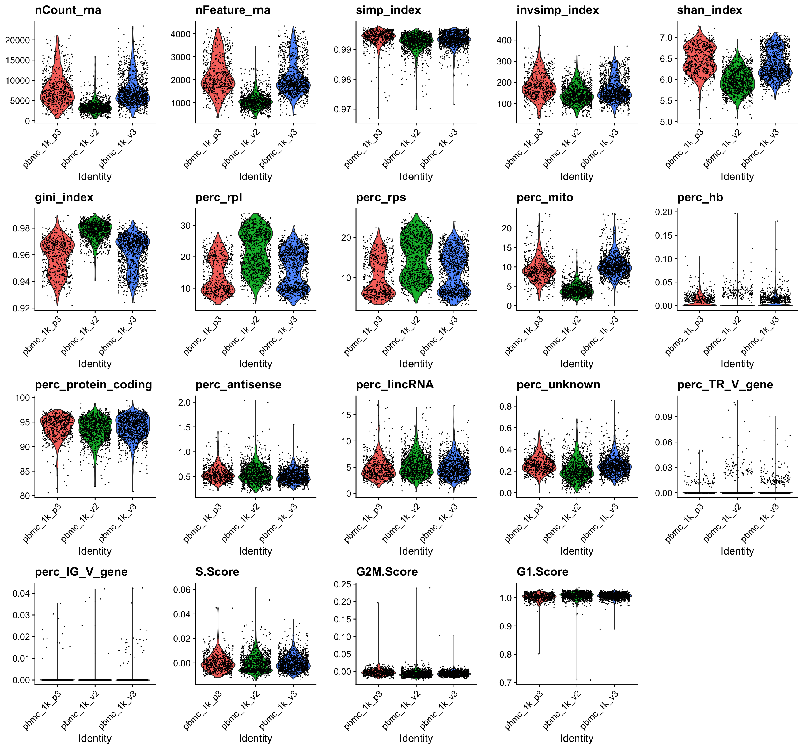
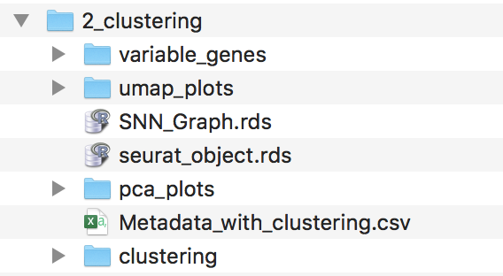
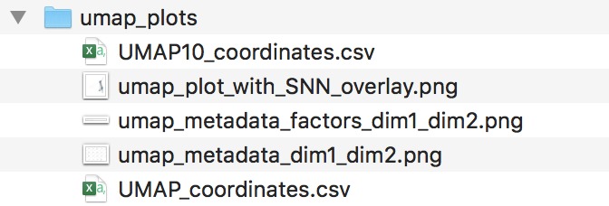

PBMC Tutorial
Paulo Czarnewski
2019-09-10
This is a basic guided analysis for using 3 PBMC datasets
Install software dependecies
The only two softwares needed are Conda and git. They should be installed using their instructions.
All other software used in Sauron is managed by Conda environment and will be installed automatically. These includes R , Rstudio , Python and all necessary packages / libraries to run the workflow. The complete list with software and their versions can be found in the environment.yml file.
Clone this repository
First, you will need to clone this repo into your project folder. For this tutorial we will create a folder sauron_tutorial_PBMC inside our Downloads folder:
mkdir ~/Downloads/sauron_tutorial_PBMC
cd ~/Downloads/sauron_tutorial_PBMC
git clone https://czarnewski@bitbucket.org/scilifelab-lts/sauron.gitThis will create a folder named “sauron” in your project folder, contating all the files required for the analysis.
Alternativelly, you can also simply create these folders and download the repository manually. Your folder structure should look like this:

Download PBMC dataset
Here, we will download 3 PBMC datasets to work with. All datasets will be put into the data folder. Each dataset should be placed individually within its own folder. This enforces the user to have well confided raw data condicent with good data management practices. This further allows designing ver complex designs using the metadata table.
cd ~/Downloads/sauron_tutorial_PBMC/sauron/data
mkdir pbmc_1k_v2
curl -o pbmc_1k_v2/pbmc_1k_v2_filtered_feature_bc_matrix.h5 -O \
http://cf.10xgenomics.com/samples/cell-exp/3.0.0/pbmc_1k_v2/pbmc_1k_v2_filtered_feature_bc_matrix.h5
mkdir pbmc_1k_v3
curl -o pbmc_1k_v3/pbmc_1k_v3_filtered_feature_bc_matrix.h5 -O \
http://cf.10xgenomics.com/samples/cell-exp/3.0.0/pbmc_1k_v3/pbmc_1k_v3_filtered_feature_bc_matrix.h5
mkdir pbmc_1k_p3
curl -o pbmc_1k_p3/pbmc_1k_protein_v3_filtered_feature_bc_matrix.h5 -O \
http://cf.10xgenomics.com/samples/cell-exp/3.0.0/pbmc_1k_protein_v3/pbmc_1k_protein_v3_filtered_feature_bc_matrix.h5Adding metadata to your folder
Add your data and metadata into the data directory. One dataset matrix per folder (i.e. one plate per folder or one 10X lane per folder). Name each folder as the desired sample names. The sample names should match the names in the 1st column of you metadata csv file.
We will manually add information into the metadata file (which can be created with any spread sheet editor) and saved as .csv.

It is important to notice that each line corresponds to a dataset and the first column is exactly the name of the dataset folders. Only names found in both the metadata and in the data folder will be used.
Your final folder should look like this:

Loading the data
With the data in place, we can now define some anlaysis parameters and then load it to Sauron. Here we will define some metadata parameters we would like to use for plotting later on. Those are defined based on the column names of the metadata file above.
We can now load them using the 00_load_data.R function.
Rscript $script_path/00_load_data.R \
--input_path $main/'data' \
--dataset_metadata_path $main/'data/metadata.csv' \
--assay 'rna' \
--output_path $main/'analysis/1_qc' \
2>&1 | tee $main/log/'00_load_data_log.txt'This will create a seurat object with a slot named rna containing all the counts. The results will be outputed in the folder analysis/1_qc. The log file after running this function can be seen in the log folder log/00_load_data_log.txt. There should be now a raw_seurat_object.rds in your qc folder..

Quality control
Once the data is loaded into the Seurat object, it becomes easy to work with it and perform several quality control (QC) metris using the function 01_qc_filter.R. By default, this function will compute cell cycle scoring, remove non-coding genes (including pseudogenes), calculate percentage of several gene families.
Rscript $script_path/01_qc_filter.R \
--Seurat_object_path $main/'analysis/1_qc/raw_seurat_object.rds' \
--columns_metadata $var_to_plot \
--species_use 'hsapiens' \
--remove_non_coding 'True' \
--plot_gene_family 'RPS,RPL,mito,HB' \
--remove_gene_family 'mito' \
--min_gene_count '5' \
--min_gene_per_cell '200' \
--assay 'rna' \
--output_path $main/analysis/1_qc \
2>&1 | tee $main/log/'01_QC_log.txt'By default, this function will calculate several percentage estimates and output two kind of files, either contating ALL/RAW cells or FILTERED cells only. Thus, you can later choose which to proceed if you dont want to exclude any cell at first. Your folder should look like this:

By default, cells need to be within:
- 0 - 25 % mitocondrial genes
- 0 - 50 % RPS genes
- 0 - 50 % RPL genes
- 0.5 - 99.5 quantiles of number UMIs (removing extreme ouliers)
- 0.5 - 99.5 quantiles of number of counts (removing extreme ouliers)
- 90 - 100 % protein coding genes
- .9 - 1 Gini index
- .95 - 1 Simpson index
Some of the outputed plots can be found below, before and after filtering:
ALL cells

FILTERED cells only

Dataset integration
Once low quality cells were filtered out we can proceed to integrate the datasets with the function 02_integrate.R. It will adjust for batch effects if present and output into a integrated space in the corresponding slot. Currently implemented methods are mnn, cca, and combat. MNN is the fastest and will be used here, but it does not generate a corrected gene expression matrix. Therefore, we will use it only to reduce dimentions and perform clustering later on.
Rscript $script_path/02_integrate.R \
--Seurat_object_path $main/'analysis/1_qc/filt_seurat_object.rds' \
--columns_metadata $var_to_plot \
--regress $var_to_regress \
--var_genes 'seurat' \
--integration_method 'mnn,dataset' \
--cluster_use 'NONE' \
--assay 'rna' \
--output_path $main/'analysis/2_clustering' \
2>&1 | tee $main/log/'02_integrate_log.txt'Now there should be a folder named 2_clustering containig the your seurat object. This object contains everything from the one used as imput plus the integrated slot and variable genes computed.

This function will then calculate variable genes using both scran and seurat methods for each dataset and for all datasets together. It will output them into the variable_genes folder, which should look like this:
Variable genes folder

Dim. Reduction & Clustering
Rscript $script_path/03_dr_and_cluster.R \
--Seurat_object_path $main/'analysis/2_clustering/seurat_object.rds' \
--columns_metadata $var_to_plot \
--regress $var_to_regress \
--PCs_use 'var,1' \
--var_genes 'seurat' \
--dim_reduct_use 'umap' \
--cluster_use 'none' \
--cluster_method 'leiden' \
--assay 'mnn' \
--output_path $main/'analysis/2_clustering' \
2>&1 | tee $main/log/'03_dr_and_cluster_log.txt'After running this function, several files and folders should appear in your output folder, which will look something like this:

PCA folder

UMAP folder

Clustering folder

Clustering analysis
Rscript $script_path/'05_cluster_correlation.R' \
--Seurat_object_path $main/'analysis/2_clustering/seurat_object.rds' \
--clustering_use 'HC_12' \
--exclude_cluster 'NONE' \
--merge_cluster '0.95,0.9,0.85,0.8,0.75,0.7' \
--output_path $main/'analysis/2_clustering/cluster_correlations' \
2>&1 | tee $main/'log/4_clust_corr.txt'Gene expression testing
Rscript $script_path/04_diff_gene_expr.R \
--Seurat_object_path $main/'analysis/2_clustering/seurat_object.rds' \
--clustering_use 'merged_0.8' \
--metadata_use 'dataset' \
--exclude_cluster 'NONE' \
--assay 'rna' \
--output_path $main/'analysis/2_clustering/diff_expr' \
2>&1 | tee $main/'log/5_diff_expr_log.txt'